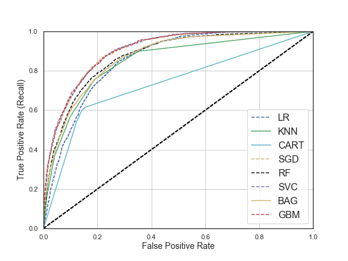
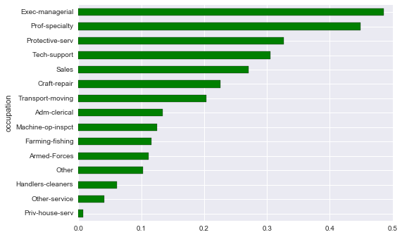
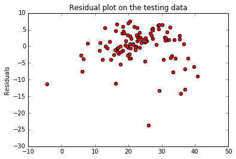

<<<<<<< HEAD ======= >>>>>>> 8ef4965d7f7fb5c802a1c9aca31b57520fb3c44c Classification Using Pandas and Scikit-Learn: Predicting Income from Census Data <<<<<<< HEAD In this post, I am going to use census data to predict income based on the information provided in the census data. The data comes from the UCI Machine Learning Repository ... read more.  Predicting the Price of Housing using Python ======= In this post, I am going to use census data to predict income based on the information provided in the census data. The data comes from the UCI Machine Learning Repository ... read more.  Predicting the Price of Housing using Python >>>>>>> 8ef4965d7f7fb5c802a1c9aca31b57520fb3c44c In this post, I am going to use linear regression and regression trees to predict the price of housing in Boston. The dataset used for this analysis can be found here. Each observation in the data corrosponds to a census tract which represents a division of the area. ... read more.  Regression Model for Predicting Fat Price In this post, I will built a linear regression model to predict the fat price using the production of cottage cheese, icecream, and milk. The data can be dowloaded from here ... read more.